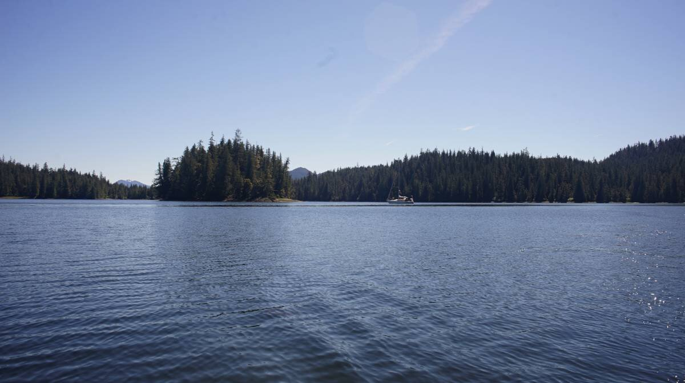
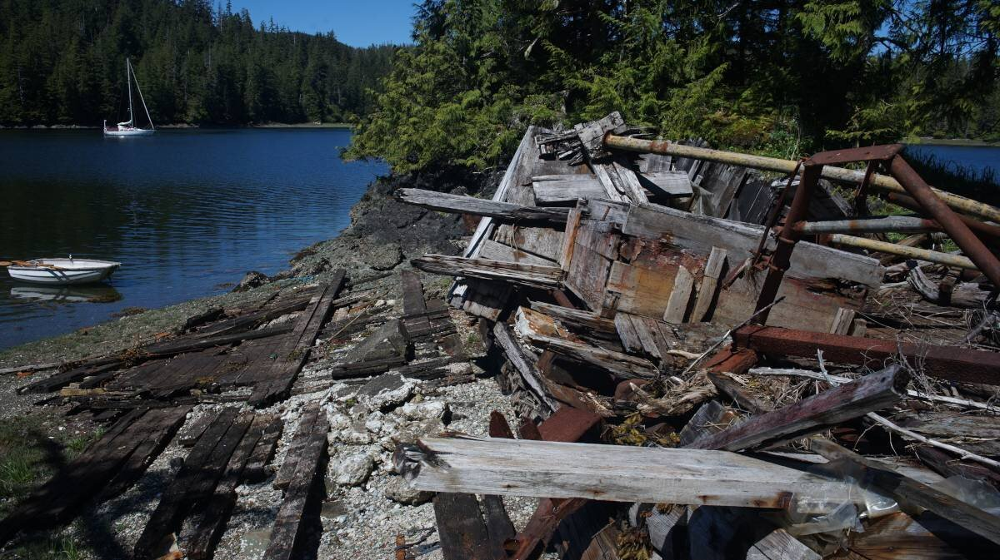
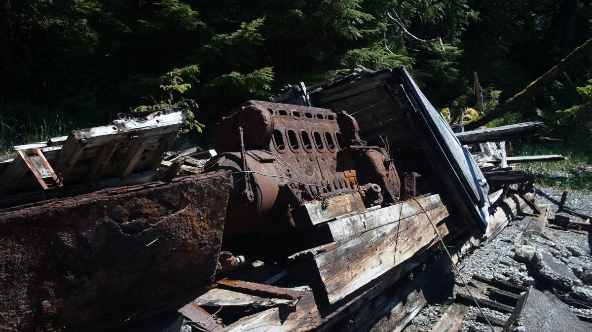
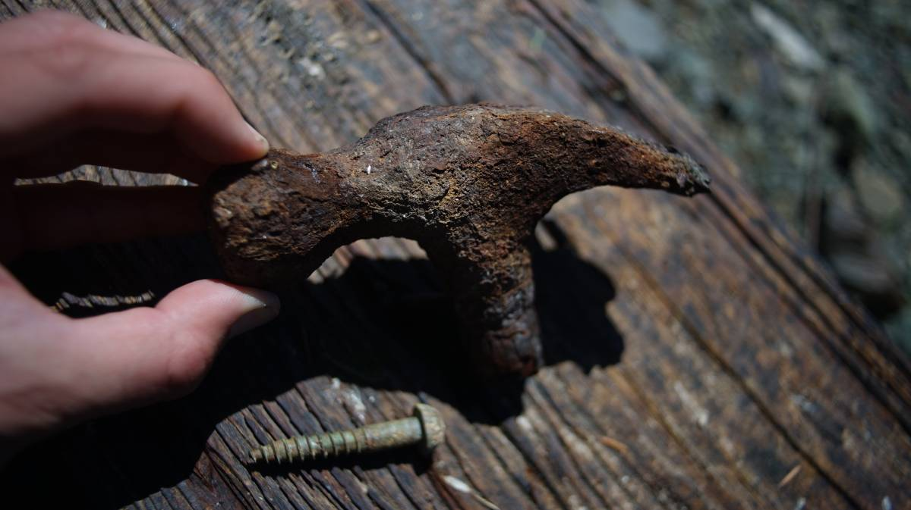
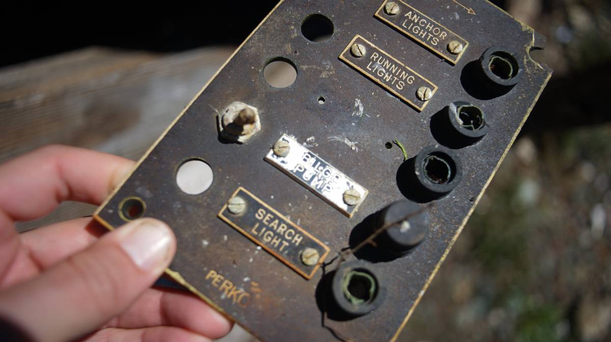
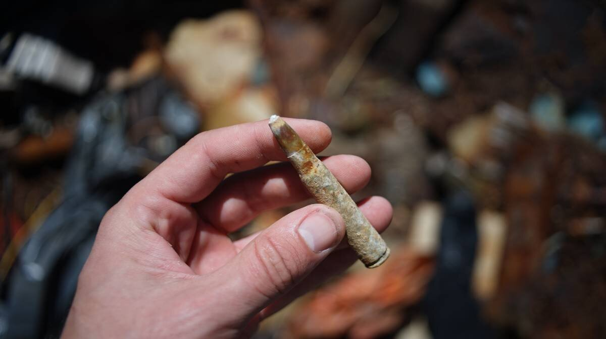
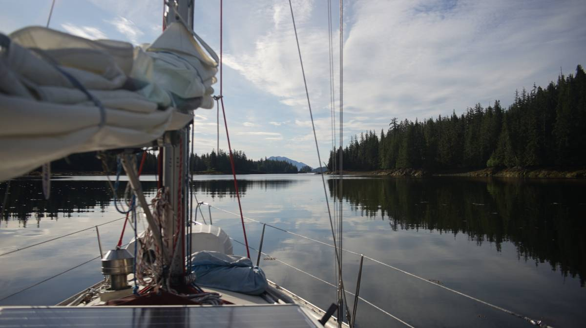

snug cove
On June 6th 2024, we arrived in Snug Cove on Prince of Wales Island in us se alaska.
We left Ketchikan at 0700, pushing off the dock between squalls, happy that one wasn't blowing at the time of our exit. We raised the main just outside of the breakwater, and proceeded to sail out of Tongass Narrows, trying to make distance before any of the cruiseships left the dock... we didn't want to encounter them in this narrow pass.
When further out of the channel, we poled out the jib and continued to sail downwind, with 15 knots out of the southeast. Of course, as soon as we worked past the Guard Island Light, we saw two behemoths up ahead in Clarence Strait. Two. Fuck. We're not super familiar with the routes, we weren't sure if they were aiming to both go to Tongass Pass, or just continue down Clarence Strait. Both aimed to go to Ketchikan, by way of Tongass Narrows from the north. We managed to stay out of their way, but the wind lessened past the light, making 'getting away' a hard thing to do...
It is always intimidating to have a large ship point its bow towards, having no idea if they're just going to keep coming towards you, or if they'll point in the direction you decide to run away to... I hate cruiseships...
We had no more behemoths after that, only small fishing and pleasure boats, going both up and down Clarence Strait. Our wind returned, and carried us all the way to our chosen anchorage of the day: Snug Cove. The wind stayed with us after that, propelling us at 6-6.5 knots under a poled-out jib and full main. We had excellent sailing conditions, and arrived quickly to Snug Cove.
The entrance is not intimidating when arriving at high tide, there is plenty of room in the channel. As usual, there are rocks to avoid, but the charts showed them well. We anchored in the north west part, in a 30-foot patch. As we let out more rode, Pino ended up in 50 feet. The SE wind did not reach in here, making our nook very comfortable, very snug indeed. We stayed on the 7th, too, the wind was coming out of the north the next day, we figured we'd wait for the wind to return to the south on Saturday the 8th. In the meantime, we could enjoy our free day at anchor!
It was cloudy in the morning, but it all cleared up in the afternoon. We got a full blue sky and a hot sun, we were able to do some solar cooking! Rek baked a chocolate chip cake, while Devine went to row around the little island in our anchorage. They ended up staying on the little island for a long while, having discovered the wreck of an old wooden boat.
Devine found old rusty bullets, an old hammer, saw the old engine, all of it covered in thick rust. The metal was now puffy, all angles worn away by time and salt.
Devine tried to find information about the boat, but found no name, they did not try to look too deep because andering through a wreck full of rusty nails and other sharp bits is not a smart thing to do.
  June 8th 2024. We left Snug Cove at 0700, at the lowest tide (-3 ft), and again, had no problems. In the shallowest and narrowest point, we had 17 ft under our keel(we draw 6.3 ft). The below photo is the narrow, when exiting.
On our exit to go north, we went around the reefs and towards Snug Harbor East (an alternate, but temporary anchorage), before continuing east between the reefs. The path is wide, the reefs are evident, it's very safe to pass here.
That day, we had planned to go to Exchange Cove on the north east of Prince of Wales Island(this same island), but the wind was too weak to sail all 35 NM, so we stopped at Ratz Harbor- that...was a mistake. The SE wind began as we arrived, but we knew we couldn't make it to either Coffman Cove or Exchange Cove before the tide turning, so Ratz Harbor seemed like a good place to overnight in south winds...it wasn't, at least it wasn't because a few hours into our stay the wind turned to the north, putting us in a lee shore. We left, and went back to Snug Cove... yet again.